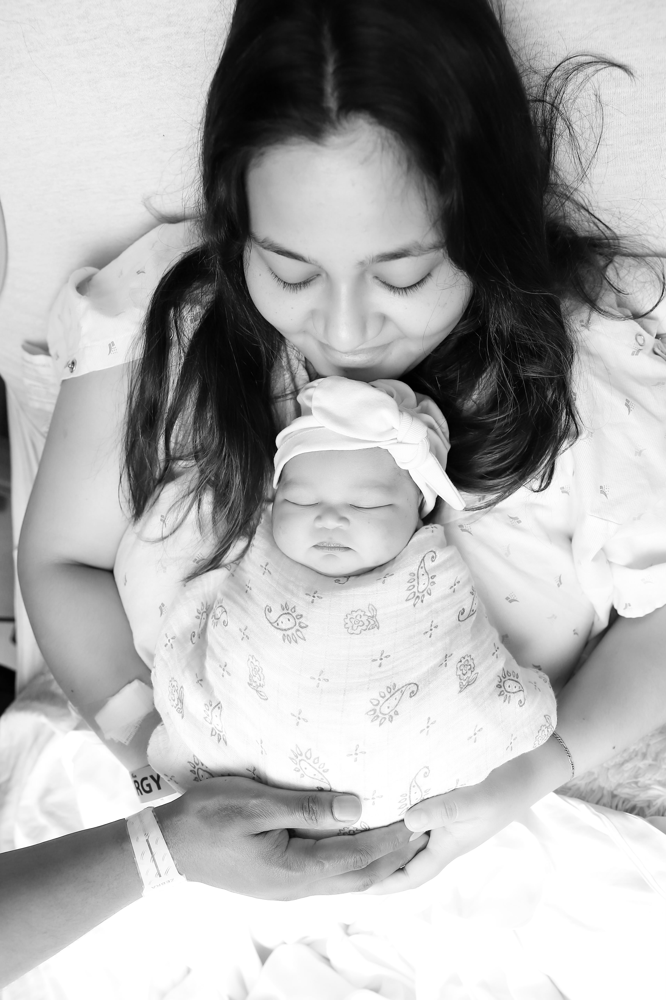

Reportaje de nacimiento
Nacida el 14 de julio de 2026
Plainsboro, New Jersey · Estados Unidos
Nuestra historia
Hay momentos que uno espera toda la vida y aun así llegan como una sorpresa. El 14 de julio de 2026, en una mañana tibia de verano en New Jersey, llegaste tú, Samira. Pequeña, perfecta y con una calma que llenó la habitación de silencio y de luz.
Te tuve en brazos y entendí que la fotografía, mi oficio de tantos años, por fin se volvía profundamente personal. Estas imágenes no son un encargo: son la primera carta que te escribo, hecha de luz natural, de gestos diminutos y de un amor que todavía no sé cómo nombrar.
Con todo mi cariño — Papá
Galería
Una selección del reportaje: retratos de estudio, detalles diminutos y los abrazos que la recibieron en el mundo.
Detalles del nacimiento
Un pequeño gran milagro que llegó para llenarnos de luz.
Sobre mi trabajo
Fotografío como quien escribe un diario: sin poses forzadas, dejando que la escena respire. Trabajo con luz natural, un enfoque documental y una obsesión sana por esos gestos auténticos que cuentan la historia de una familia.
El reportaje de Samira nació de esa misma manera —observando, esperando el instante— y así es como me gustaría fotografiar el tuyo.
Los primeros días, con delicadeza y sin prisa.
La espera y el vínculo, capturados con serenidad.
Un día cualquiera que merece recordarse para siempre.

Contacto
¿Esperas un bebé o quieres un reportaje de familia? Escríbeme y cuéntame tu historia. Estaré encantado de acompañarte.